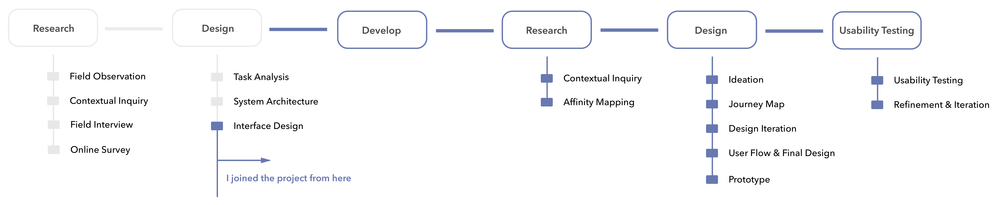
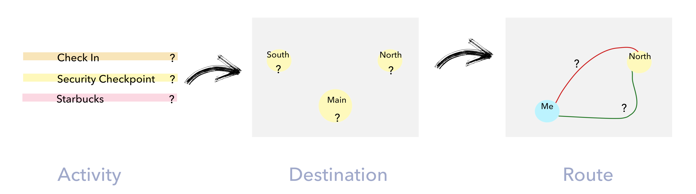

OBJECTIVE
Lacking of information provided about airport environments and route conditions makes it difficult for air travelers to plan indoor activities. Our target is to:
- Provide provision of relevant information for travelers to facilitate their navigational decision making.
- Use universal design approach to ensure it is useful and usable by travelers with different physical abilities.
PROCESS

MY ROLE
Develop
Led the implementation of high-fidelity interactive prorotype using Swift and iBeacon.
Research
Conducted contextual inquiry for 8 users(2 wheelchair users, 3 blind users, 3 older adults). Transcribed the recording and finished the affinity mapping.
Design
Led design phases of ideation, journey map, design iteration. Created user flow, final design and crafted the interactive prototype with InVision.
Usability Testing
Designed, moderated the usability testing and refined design.
DURATION
Sep.2017 - May.2018
@ Georgia Tech
PROJECT TEAM
Yilin Elaine Liu | Xi Chen | Alex Carroll
METHODS AND TOOLS
Field Study, Usability Testing, Wireframing, Sketch, Principle, InVision, iBeacon, Swift
RESEARCH GOAL

- Understand users' needs in depth under real life context.
- The utility and usability of the application to support navigation by travelers with different physical abilities.
CONTEXTUAL INQUIRY
Following is the user tasks we designed. The whole process was audio and video recorded. And we used think aloud method to gather more information about users' behavior.

AFFINITY MAPPING
Based on the 8 participants' recording, Elaine and I independently transcribed and summarized the insights. And then our codes were discussed, modified, and combined. By using affinity mapping, insights were categorized to 3 major parts - usability and utility of the navigational delivery functions, usability of generic information design and information related to users's needs for facilitating decision making.

Ideation
Already familiar with directional navigation in most apps? We also provide behavior navigation!
From the research, users not only need directional navigation which is provided in most navigation applications. More importantly, considering accessibility and indoor context, users need behavior navigation. That is, we should provide guides of what users can do for the next step and information that can facilitate their behavior decision making.
Let's figure out the hierarchy of behavior decision making:

(1) Activity: Mandatory activities(check-in, security check, gate) and exploratory activities(shop, dine, restroom, etc.).
(2) Place/ Destination: One activity may correspond to multiple locations. For instance, if the user chose security check, then he may have 3 options including south, north, or main security check.
(3) Route: Users can choose different routes from one decision point to another.
Journey Map
According to users needs from research result, we drew journey map based on the previous hierarchy of decision making and marked information that users need at each decision making step.

Design Iteration
Mandatory Activity
——
Customize activity, destination, route choices
Users can select their preferred activity based on time info and accessibility info. We automatically recommends two routes - wheelchair friendly or not. Instead of just providing total time info, we provide walking time(which can be customized in the menu) and estimate waiting time to increase their confidence.
Destination Behavior Nav
——
Provide step by step info after you arrive at your destination
The app will give you notification after you've arrived at the destination. And if you need more information about the destination, such as specific direction, things to prepare, the app will give you step by step behavior navigation.
Three Mode
——
Get to gate, explore amenities, flight info
Mandatory and exploratory activities are separate in two modes so that users can focus on mandatory activities when time is emergent. If they have time to look around, they can use explore mode to find restaurants, shops and restrooms. Besides, users can keep in mind and get real time flight info using the third mode.
To collect rapid user feedbacks in general, I crafted InVision and we conducted task-based usability testing with 5 potential end users.
Refinement
Issue 1: Time details’ icon so close to “Go” button that users ignore the small “i”icon.
Solution: Move the info button next to “30 mins”. Also, the info is about the time, so it will make two functions better integrated.
Issue 2: The wording should be as clear as possible. Try to avoid any confusion
- The wording of “walk” makes users confuse especially when connects with “wheelchair” below. (Users wondered why wheelchair still needs walk)
- Users don’t know what “Wheelchair :)” mean.
- Two participants mentioned they don’t know what “amenities” is.
Solution: Change “walk” to “travel”; “:)” to “Accessible”; “Amenities” to “Shop, Dine & Restrooms”.
Issue 1: Users need explicit explanation of what the functionality is
- Users don’t know what the contact info is for. And one participant don’t know the image is the boarding pass.
Solution: Add ”Airport Assistance” title for the contact info, and “boarding pass” for the image.
Issue 2: Most users mentioned that the expedite process was somehow confusing. They were neither sure about the meaning of it nor realized it was clickble. It’s better to simplify the selection process of the expedite options.
Solution: We should provide clear actionable button to simplify the selection process. That is, change the button to an infobar, and contains one major actionable button.
User Flow
Scroll to zoom

Prototype